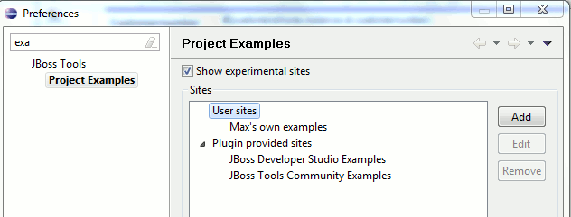

General
|
User provided project examples
|
You can now add your own project examples url to JBoss Tools without providing a plugin. Allowing you to use 3rd party project examples or simply just try out creating your own.

Related jira
|
|
Seam Examples with Cheatsheets
|
We have added a few of the Seam exmples to the project example site and we also added Cheatsheets to some of these
based on the Seam Example tutorials allowing you to see the explanation of the code and navigate to it directly in the IDE.
Related jira
|